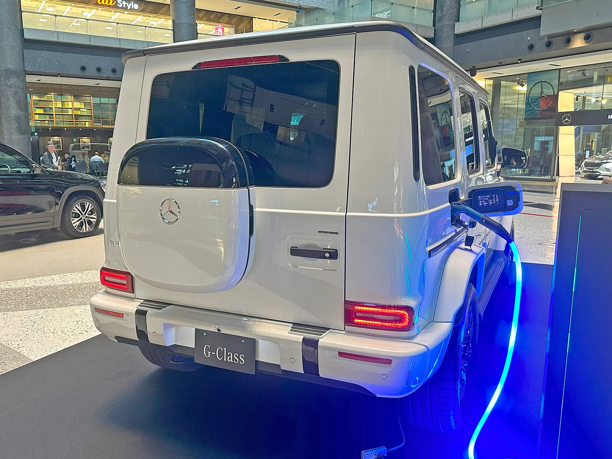
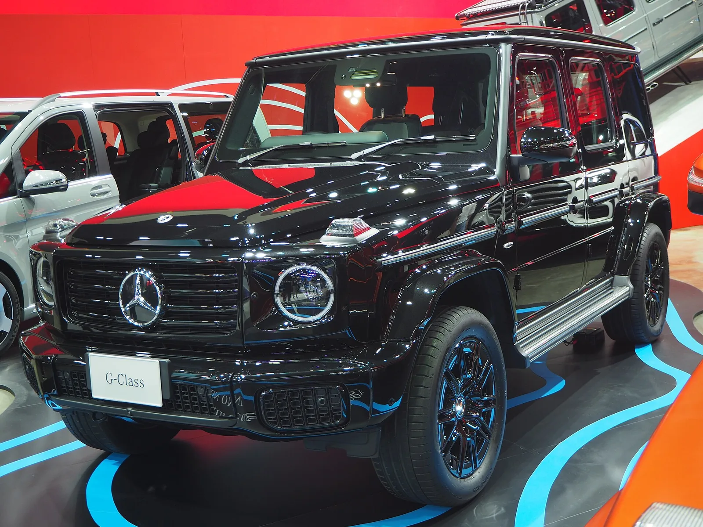

▲ G580. 사다리형 프레임을 유지하면서 모터를 네 개 넣었다 ⓒ Wikimedia Commons
전기 G바겐의 국내 가격은 2억 3,900만 원입니다.
구조가 특이합니다. 바퀴마다 모터를 하나씩, 총 네 개를 달았습니다. 합산 587마력, 최대토크 1,164Nm입니다.
그런데 사다리형 프레임은 그대로 뒀습니다. 이 조합이 이 차의 성격을 결정합니다.
1. 모터를 네 개 다는 이유
| 방식 | 모터 수 | 좌우 배분 |
|---|---|---|
| 듀얼모터 | 2개 (앞뒤 각 1) | 차동기어로 나눈다 |
| 트라이모터 | 3개 | 뒤만 좌우 독립 |
| 쿼드모터 | 4개 (바퀴마다) | 네 바퀴 완전 독립 |
바퀴마다 모터가 있으면 차동기어와 트랜스퍼케이스가 필요 없어집니다. 구동력 배분을 소프트웨어로 합니다.
오프로드에서 이 차이는 큽니다.
| 기능 | 내용 |
|---|---|
| 즉각적 토크 배분 | 바퀴가 떠도 기계 잠금 없이 다른 바퀴로 보낸다 |
| 제자리 회전 | 좌우를 반대로 굴려 탱크처럼 돈다 |
| 정밀 제어 | 바위 구간에서 바퀴별 미세 조작 |
| 내리막 | 모터 저항으로 브레이크 없이 감속 |
기계식 차동잠금장치가 하던 일을 모터가 대신합니다. 게다가 반응이 훨씬 빠릅니다. 기계 장치는 미끄러진 뒤에 잠기지만, 모터는 미끄러지기 전에 토크를 줄일 수 있습니다.
2. 프레임을 그대로 둔 이유
전기차 대부분은 배터리를 바닥에 까는 평평한 플랫폼을 씁니다. 무게중심이 낮아지고 실내가 넓어집니다.
G580은 사다리형 프레임을 유지했습니다.
| 구분 | 내용 |
|---|---|
| 득 | 비틀림에 강해 험로 주행에 유리 |
| 득 | G클래스 정체성 유지 — 형태와 성격이 그대로다 |
| 득 | 기존 생산 설비 활용 |
| 실 | 무겁다 — 프레임 + 배터리 118kWh |
| 실 | 공력이 나쁘다 — 각진 형태 + 높은 차체 |
| 실 | 주행거리 392km에 그친다 |
마지막 항목이 대가입니다. 118kWh는 큰 배터리입니다. 앞서 다룬 BYD 다한은 102kWh로 CLTC 1,008km를 갑니다.
G580은 그보다 큰 배터리로 국내 인증 392km입니다. 기준이 다르다는 점을 감안해도 격차가 큽니다. 각진 상자를 공기 중에서 밀고 가는 대가입니다.
다만 이건 실패가 아니라 선택입니다. G클래스를 사는 사람은 주행거리로 이 차를 고르지 않습니다.

▲ 각진 형태와 높은 차체는 공력에 불리하다 — 118kWh로 392km에 그치는 이유다
3. 587마력과 1,164Nm
| 합산 출력 | 587마력 |
|---|---|
| 최대토크 | 1,164Nm |
| 0→100km/h | 4.7초 |
| 배터리 | 리튬이온 118kWh |
| 주행거리 | 국내 인증 392km |
1,164Nm은 대형 트럭 영역의 숫자입니다. 다만 전기차의 토크 표기는 감속기를 거친 값인지 모터 출력축 기준인지에 따라 달라져, 내연기관과 직접 비교하기 어렵습니다.
확실한 것은 2.5톤이 훌쩍 넘을 차체가 4.7초에 100km/h에 도달한다는 결과입니다.
이 성능이 오프로드에서 갖는 의미는 가속이 아닙니다. 급경사에서 멈춘 상태에서 다시 출발할 수 있는 힘입니다. 내연기관은 클러치나 토크컨버터를 미끄러뜨려야 하지만, 모터는 0rpm에서 최대토크를 냅니다.
4. 이름이 EQG가 아닌 이유
이 차의 이름은 'G580 with EQ Technology'입니다. EQG가 아닙니다.
| 세대 | 방식 | 예 |
|---|---|---|
| 기존 | EQ + 알파벳 | EQC, EQE, EQS |
| 현재 | 기존 모델명 + with EQ Technology | G580 with EQ Technology |
벤츠는 EQ 차명을 폐기하기로 했습니다. 전동화 전환에 별도 브랜드를 쓰는 것이 "결국 불필요한 행동"이라는 판단입니다.
G클래스는 이 전환이 가장 필요했던 모델입니다. G바겐이라는 이름 자체가 40년 넘게 쌓인 자산인데, EQG로 부르면 그 연결이 끊깁니다.

▲ 국내에는 70대 한정 에디션 원부터 판매되고 내년 상반기 확대된다
5. 국내 판매 방식
| 항목 | 내용 |
|---|---|
| 가격 | 2억 3,900만 원 |
| 1차 | 에디션 원 70대 한정 |
| 확대 | 내년 상반기 일반 판매 |
| 보조금 | 고가 전기차는 국고 보조금 지급 대상에서 제외된다 |
마지막 항목을 짚어둘 필요가 있습니다. 국내 전기차 보조금은 차량 가격에 따라 지급률이 달라지고, 일정 금액을 넘으면 지급되지 않습니다. 2억 원대 차량은 보조금과 무관한 영역입니다.
한정판을 먼저 파는 방식도 의도적입니다. 70대는 국내 G클래스 연간 판매를 감안하면 적은 물량입니다. 초기 수요를 확인하면서 희소성을 만드는 구성입니다.

▲ 벤츠는 G클래스 이름을 유지하고 EQ를 기술 표기로 붙이는 방식으로 전환했다
6. 정리
메르세데스-벤츠 코리아가 G580 위드 EQ 테크놀로지를 2억 3,900만 원에 출시했습니다. 70대 한정 에디션 원부터 판매하고 내년 상반기 확대합니다.
바퀴마다 모터를 개별 장착해 합산 587마력, 최대토크 1,164Nm를 내며 0→100km/h를 4.7초에 끊습니다. 배터리는 118kWh, 국내 인증 주행거리는 392km입니다.
사다리형 프레임을 유지하고 새 후륜 강성 차축을 조합했습니다. 험로 성능과 G클래스 정체성을 지키는 대신 무게와 공력에서 대가를 치른 구성입니다. 이름은 EQG가 아닌 G580 with EQ Technology로, 벤츠의 새 작명 방식이 처음 적용된 사례입니다.